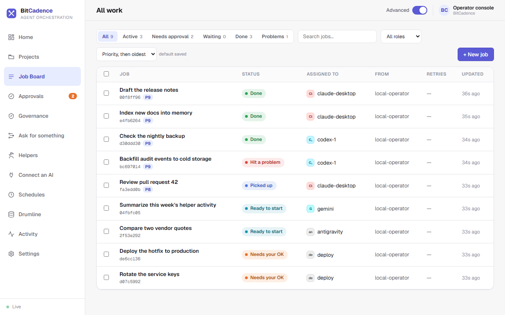
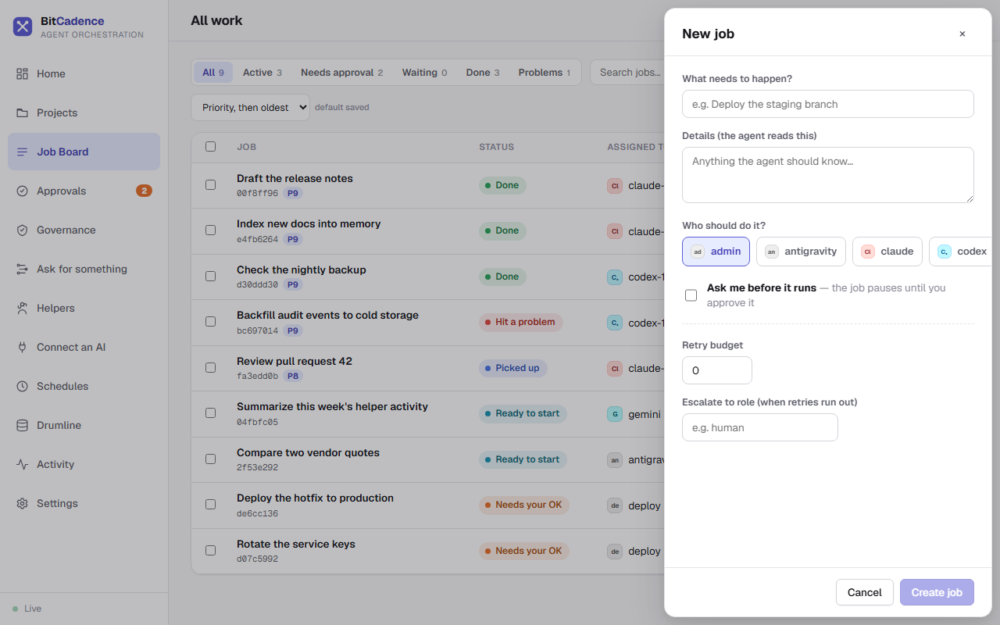
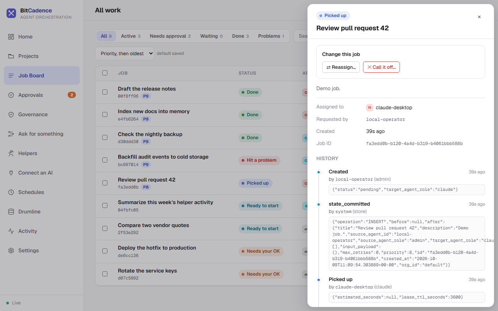

Job Board & Managing Tasks
Goal
Submit new tasks to helper dropboxes, inspect real-time queue states, examine tamper-evident execution drawers, and manage task lifecycles (retries, cancellations, reassignments, and archiving).
Step-by-Step Instructions
1. Open the Job Board
In the left menu, click Job Board. Its heading reads All work.

2. Filter and Search Tasks
- Use the tabs at the top to focus on one kind of work. Each shows a count:
- All
- Active: picked up by a helper and running.
- Needs approval: paused at a human gate.
- Waiting: waiting for an earlier step.
- Done
- Problems: failed or rejected.
- Type in Search jobs to filter, pick a role from All roles, or change the sort order (the default is Priority, then oldest).
3. Creating a New Job
For most work, Ask for something is easier. To drop one job on the board yourself:
- Click + New job in the upper right.
- Fill out the panel:
- What needs to happen? A plain-English summary (for example, "Summarize repository changes").
- Details: anything the helper should know. It reads this.
- Who should do it? Pick a role:
claude,codex,antigravityand so on. - Ask me before it runs: tick this if the job must pause for your approval first.
- Retry budget: how many automatic retries if the helper fails.
- Escalate to role: where it goes when retries run out.

- Click Create job. The task appears on the Job Board.
4. Inspecting Job Details & History
Click any job row. The job panel slides in from the right:
- Header: the status word and the job title.
- Change this job: the actions that make sense for its state (see below).
- Assigned to / Requested by / Created / Job ID.
- History: an append-only timeline: created, picked up, completed or failed, and so on.

5. Managing Job Actions
Under Change this job, depending on the job's state:
- Approve / Reject: when the job needs your OK. See Approvals.
- Retry: puts a failed or rejected job back in line.
- Reassign…: copies the job to a different role and archives the original.
- Call it off…: stops an in-flight or waiting job.
- Archive / Unarchive: hides finished work without deleting its history.
The CLI Equivalent
Every Job Board action maps directly to the mco command-line tool:
# Drop a new job into a helper's inbox
mco send codex `
--title "Summarize the repository" `
--message "Review recent commits on main and summarize changes." `
--approve
# Inspect tamper-evident audit history
mco audit <job-id>
# Check for duplicate tasks
mco duplicates <job-id>
# Retry a failed job
mco retry <job-id>
# Cancel a job
mco cancel <job-id>
# Reassign a job to a different role
mco reassign <job-id> --to-role claude
# Archive a completed job
mco archive <job-id>
What You'll See
- Atomic Leases: When a worker picks up a job, the status changes from
pendingtoleased/in_progress. The table stampsleased_by_instance_idwith the worker's unique ID. - Tamper-Evident History: The audit trail shows every transition with the exact actor ID and UTC timestamp. The database prohibits updating or deleting historical event rows.
If It Goes Wrong
1. "Job stuck in 'waiting' status"
- Cause: The job has dependencies (
depends_on) that have not yet reachedcompleted. - Fix: Open the Job Detail Drawer, check the Depends on field, and ensure the parent job finishes successfully.
2. "Job stuck in 'needs_approval' status"
- Cause: The job was created with governance enabled and is paused at a human gate.
- Fix: Go to the Approval Queue, review the instructions, and click Approve.
3. "Job immediately fails with 'S3 / Network / Tool error'"
- Cause: The helper crashed or encountered an unhandled exception during execution.
- Fix: Inspect the error message in the job panel. If transient, click Retry. If the assigned role cannot handle the task, click Reassign to route to another role.